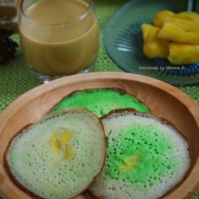

Pemahaman Lengkap Median, Modus & Serabi Ngampin
Guiding Resources adalah kumpulan materi pembelajaran lengkap yang berisi penjelasan tentang Serabi Ngampin, rumus median dan modus, serta contoh-contoh soal yang dapat membantu kamu memahami konsep dengan lebih mendalam. Gunakan sumber daya ini sebagai referensi saat mengerjakan soal dan aktivitas pembelajaran! 📖
SUMBER 1
Pahami asal-usul, tradisi, dan hubungan Serabi Ngampin dengan pendekatan STEAM

📍 Apa Itu Serabi Ngampin?
Serabi Ngampin merupakan makanan tradisional khas Ambarawa, Jawa Tengah yang masih dibuat dengan cara tradisional menggunakan tungku tanah liat dan api kayu bakar. Makanan ini telah menjadi bagian dari warisan budaya lokal selama bertahun-tahun dan terus dinikmati oleh masyarakat.
🎨 Varian Rasa Serabi
Serabi Ngampin memiliki berbagai varian rasa yang disukai pelanggan berbeda:
📊 Data Penjualan & Analisis Statistika
Penjual Serabi Ngampin biasanya mencatat jumlah penjualan setiap rasa setiap hari untuk mengetahui rasa mana yang paling diminati pembeli. Data penjualan tersebut dapat dianalisis menggunakan konsep median dan modus:
Dengan demikian, penjual dapat menentukan strategi produksi yang lebih efektif berdasarkan data tersebut.
Peserta didik mengerti proses dalam pembuatan Serabi Ngampin, unsur sains terlihat dari proses perubahan bahan makanan ketika dipanaskan. Adonan serabi yang awalnya cair mengalami perubahan tekstur menjadi padat dan matang karena pengaruh suhu tinggi dari tungku. Selain itu, proses pemanasan menyebabkan perubahan warna menjadi kecoklatan akibat reaksi kimia pada bahan (seperti karamelisasi atau reaksi Maillard). Jika adonan didiamkan sebelum dimasak, dapat terjadi fermentasi ringan yang membuat serabi lebih mengembang karena terbentuk gas. Sains juga membantu memahami mengapa aroma khas serabi muncul saat matang dan mengapa rasa serta teksturnya bisa berbeda tergantung komposisi bahan dan lama pemanggangan.
Peserta didik memahami teknologi dalam konteks Serabi Ngampin berkaitan dengan penggunaan alat bantu yang mendukung proses produksi maupun pengolahan data penjualan. Contohnya adalah penggunaan tungku atau kompor sebagai sumber panas, wajan cetakan serabi untuk membentuk adonan, serta alat ukur seperti timbangan dan gelas takar agar ukuran bahan lebih konsisten. Selain itu, teknologi modern seperti kalkulator, Excel, atau Google Sheets dapat digunakan untuk mencatat jumlah penjualan setiap hari dan mengolahnya menjadi data statistik. Dengan bantuan teknologi, proses pembuatan serabi menjadi lebih terukur, dan analisis penjualan dapat dilakukan lebih cepat serta lebih akurat.
Peserta didik mengetahui unsur engineering pada Serabi Ngampin terlihat pada cara merancang strategi produksi agar lebih efisien dan menguntungkan. Rekayasa dilakukan dengan mengatur alur kerja mulai dari persiapan bahan, pembuatan adonan, proses memasak, hingga pengemasan dan penjualan. Selain itu, penjual dapat menentukan jumlah produksi berdasarkan data penjualan agar tidak terjadi banyak sisa atau kekurangan stok. Engineering juga mencakup penentuan waktu pemanggangan yang tepat, pengaturan suhu tungku, dan strategi pembagian tugas dalam produksi agar proses berjalan cepat dan hasil serabi tetap berkualitas. Dengan rekayasa yang baik, usaha serabi dapat berkembang karena prosesnya lebih efektif.
Peserta didik mengenal variasi dalam Serabi Ngampin berkaitan dengan nilai estetika dan budaya yang melekat pada makanan tradisional tersebut. Serabi tidak hanya dinilai dari rasa, tetapi juga dari tampilan bentuknya, warna bagian atas dan bawah, serta variasi topping yang membuatnya menarik bagi pembeli. Kreativitas dalam memilih rasa seperti pandan, coklat, keju, atau durian juga termasuk unsur seni karena menunjukkan inovasi. Selain itu, Serabi Ngampin merupakan bagian dari budaya lokal yang diwariskan secara turun-temurun, sehingga cara memasaknya menggunakan tungku tanah liat juga memiliki nilai seni tradisional. Unsur seni juga tampak pada cara penyajian dan desain kemasan yang membuat produk lebih menarik untuk dijual.
Peserta didik menganalisis matematika pada Serabi Ngampin digunakan untuk menganalisis data penjualan dan membantu pengambilan keputusan usaha. Penjual dapat mencatat jumlah serabi yang terjual setiap hari, lalu menghitung mean (rata-rata) untuk mengetahui penjualan harian secara umum. Median digunakan untuk menemukan nilai tengah penjualan, sedangkan modus digunakan untuk mengetahui rasa serabi yang paling sering terjual. Selain itu, matematika juga digunakan untuk menghitung total pendapatan, keuntungan, serta membuat tabel atau diagram grafik penjualan. Dengan bantuan matematika, penjual dapat menentukan strategi produksi yang lebih tepat berdasarkan data nyata, sehingga usaha menjadi lebih terarah dan tidak hanya berdasarkan perkiraan.
SUMBER 2
Pelajari definisi dan rumus untuk menghitung median dari sekumpulan data
📊 Definisi Median
Median adalah nilai tengah dari suatu kumpulan data yang telah diurutkan dari terkecil ke terbesar (atau sebaliknya). Median membagi data menjadi dua bagian yang sama besar: separuh data di bawah median dan separuh data di atas median.
✅ Rumus Median
Jika jumlah data GANJIL:
Jika jumlah data GENAP:
📝 Keterangan Rumus:
Tips Penting:
SELALU URUTKAN DATA TERLEBIH DAHULU! Median hanya bisa dihitung dari data yang sudah terurut. Jangan lupa untuk membedakan antara data ganjil dan genap!
Seorang penjual Serabi Ngampin mencatat jumlah penjualan selama beberapa hari sebagai berikut:
45, 50, 48, 52, 47, 55, 60
Langkah Penyelesaian:
45, 47, 48, 50, 52, 55, 60
n = 7 (GANJIL)
Median = Data ke-(n+1)/2 = Data ke-(7+1)/2 = Data ke-8/2 = Data ke-4
45, 47, 48, 50, 52, 55, 60
✅ Jawaban:
Jadi median penjualan Serabi Ngampin adalah 50 buah.
SUMBER 3
Pelajari definisi dan cara menentukan modus dari sekumpulan data
📊 Definisi Modus
Modus adalah nilai yang paling sering muncul dalam suatu kumpulan data. Modus menunjukkan apa yang paling umum atau paling tipikal dalam data. Data dapat memiliki satu modus (unimodal), dua modus (bimodal), atau lebih (multimodal).
✅ Rumus Modus
📝 Keterangan Rumus:
Tips Menemukan Modus:
Buat tabel frekuensi atau gunakan tally mark untuk menghitung berapa kali setiap nilai muncul. Nilai dengan frekuensi tertinggi adalah modus!
Data rasa serabi yang paling banyak dipilih pengunjung:
Cokelat, Keju, Cokelat, Original, Cokelat, Keju, Pisang, Cokelat, Keju, Original
Langkah Penyelesaian:
Nilai unik: Cokelat, Keju, Original, Pisang
| Rasa Serabi | Tally Mark | Frekuensi |
|---|---|---|
| 🍫 Cokelat | |||| | 4 kali |
| 🧀 Keju | ||| | 3 kali |
| 🟨 Original | || | 2 kali |
| 🍌 Pisang | | | 1 kali |
Frekuensi tertinggi adalah 4 kali (milik Cokelat)
Modus = Cokelat 🍫
✅ Kesimpulan:
Jadi rasa yang paling banyak diminati adalah Serabi rasa Cokelat dengan frekuensi 4 kali.
Selamat! Kamu sudah mempelajari semua sumber belajar tentang Serabi Ngampin, rumus median, dan rumus modus. Gunakan referensi ini sebagai panduan saat mengerjakan soal-soal latihan dan aktivitas pembelajaran. Dengan pemahaman yang kuat, kamu siap menguasai konsep statistika! 🚀📊
Kembali ke Guiding Activities untuk mengerjakan soal-soal dan aktivitas pembelajaran! 💪
LKPD Matematika Kelas 8 • Statistika • Guiding Resources • Median & Modus • Budaya Serabi Ngampin